Utilizando o audio fornecido para o laboratorio recitando o começo da canção Vambora da artista Adriana Calcanhoto, utilizamos o software Audacity para gravar o aluno André Luis Nunes Giannoni recitando a mesma parte da canção.
-Audio fornecido
-Audio do aluno André
-Nessa etapa os arquivos gravados foram importados como vetores utilizando a biblioteca Librosa, bem como sua respectiva taxa de amostragem. Abaixo segue os plots dos audios ao longo do tempo.
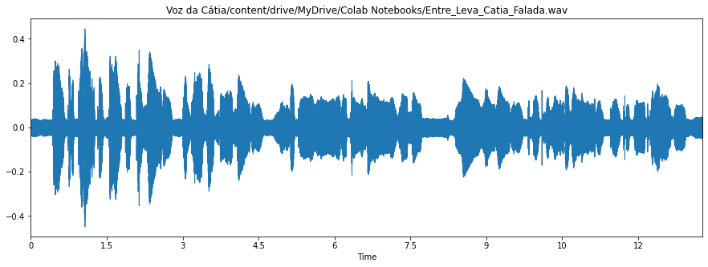
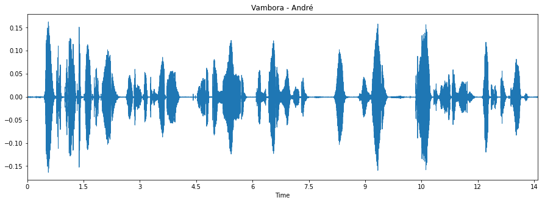
Para seguir com as analises deste laboratorio, foi separado somente a primeira estrofe da canção em ambos os audios, mostrado abaixo.
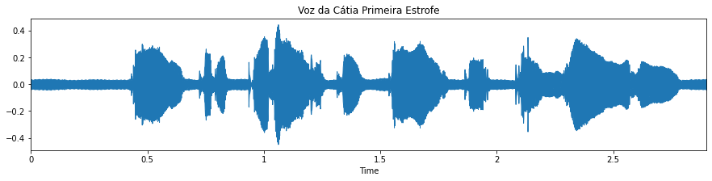
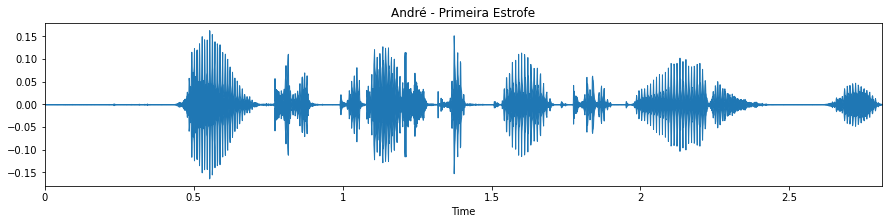
Da mesma forma que realizado no Lab 6, abaixo segue o contorno de energia dos sinais separados em decibéis (dB) em função dos segmentos.
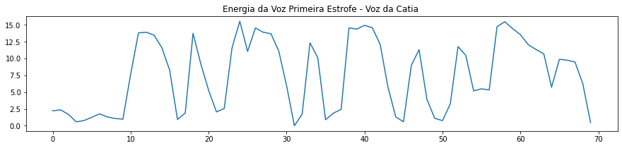
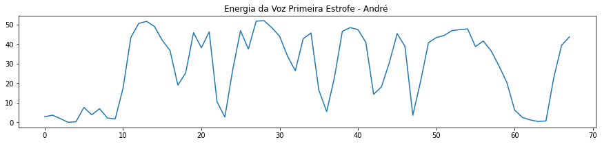
Nesta etapa, a equipe realizou a separação sonora/surda da primeira estrofe de cada áudio. Foi realizado também os cálculos dos parâmetros LPC, separação U/UV e Espectro + Envoltória LPC. Abaixo segue primeiramente os parametros referentes ao audio disponibilizado pelo professor.
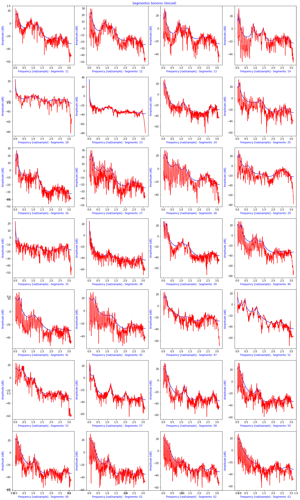
A seguir temos os parametros encontrados para o audio gravado pelo aluno André.
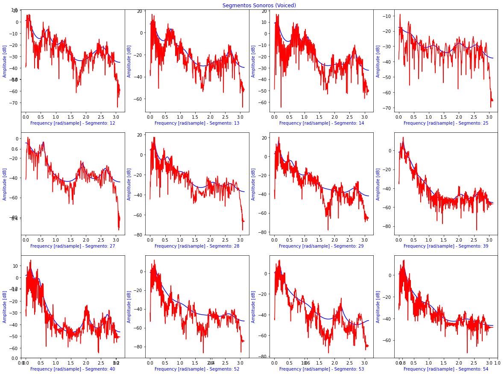
Trouxe abaixo a tabela referente aos parametros encontrados, para melhor analise.
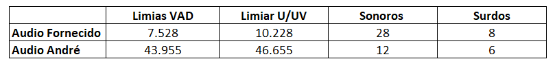
Para seguir com o laboratorio, foi realizado a analise de trajetoria da f0 para ambos os audios. Nesta analise foi utilizado o algoritimo pYIN.
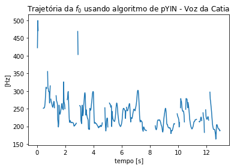
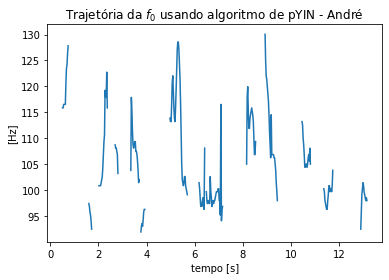
Da mesma forma que foi realizado a analise de trajetoria da f0, foi realizado a analise da trajetoria do Pitch de ambos os audios.
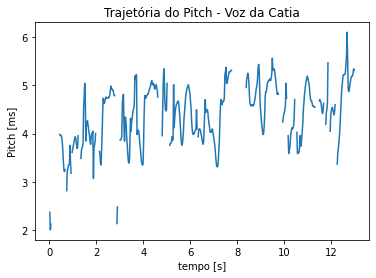
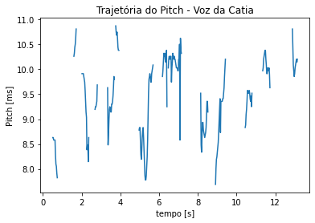
Como ultima etapa do laboratorio, foi relizado a estimativa da frequencia f0 fundamental para cada audio utilizado. Abaixo segue os espectogramas obtidos.
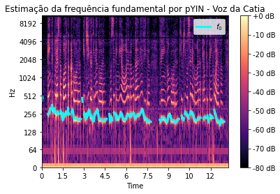
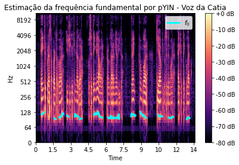
Para concluir o laboratorio foi possivel observar que ao analisar o sinal no domínio da frequência é possivel identificar com facilidade os fonemos surdos e sonoros. É possivel também diferenciar ambos os fonemas, uma vez que os fonemas sonoros apresentam uma potencia maior quando comparado com os fonemas surdos.